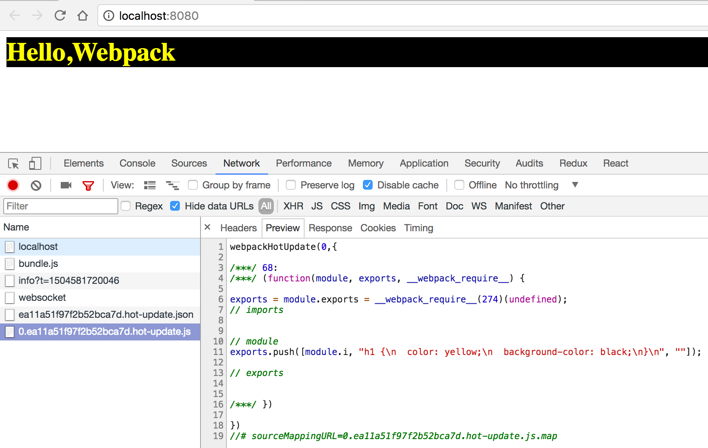

开启模块热替换
要做到实时预览，除了在4-5使用自动刷新中介绍的刷新整个网页外，DevServer 还支持一种叫做模块热替换( Hot Module Replacement )的技术可在不刷新整个网页的情况下做到超灵敏的实时预览。 原理是当一个源码发生变化时，只重新编译发生变化的模块，再用新输出的模块替换掉浏览器中对应的老模块。
模块热替换技术的优势有：
- 实时预览反应更快，等待时间更短。
- 不刷新浏览器能保留当前网页的状态，例如在使用 Redux 来管理数据的应用中搭配模块热替换能做到代码更新时 Redux 中的数据还保持不变。
总的来说模块热替换技术很大程度上的提高了开发效率和体验。
模块热替换的原理
模块热替换的原理和自动刷新原理类似，都需要往要开发的网页中注入一个代理客户端用于连接 DevServer 和网页， 不同在于模块热替换独特的模块替换机制。
DevServer 默认不会开启模块热替换模式，要开启该模式，只需在启动时带上参数 --hot，完整命令是 webpack-dev-server --hot。
除了通过在启动时带上
--hot参数，还可以通过接入 Plugin 实现，相关代码如下：const HotModuleReplacementPlugin = require('webpack/lib/HotModuleReplacementPlugin'); module.exports = { // ... plugins: [ // 该插件的作用就是实现模块热替换，实际上当启动时带上 `--hot` 参数，会注入该插件。 new HotModuleReplacementPlugin(), ], };
启动后日志如下：
> webpack-dev-server --hot
Project is running at http://localhost:8080/
webpack output is served from /
webpack: wait until bundle finished: /
webpack: wait until bundle finished: /bundle.js
Hash: fe62ac6b753c1d98961b
Version: webpack 3.5.5
Time: 3563ms
Asset Size Chunks Chunk Names
bundle.js 1.11 MB 0 [emitted] [big] main
bundle.js.map 1.33 MB 0 [emitted] main
[50] (webpack)/hot/log.js 1.04 kB {0} [built]
[118] multi (webpack)-dev-server/client?http://localhost:8080 webpack/hot/dev-server ./main.js 52 bytes {0} [built]
[119] (webpack)-dev-server/client?http://localhost:8080 5.83 kB {0} [built]
[120] ./node_modules/url/url.js 23.3 kB {0} [built]
[126] ./node_modules/strip-ansi/index.js 161 bytes {0} [built]
[128] ./node_modules/loglevel/lib/loglevel.js 6.74 kB {0} [built]
[129] (webpack)-dev-server/client/socket.js 856 bytes {0} [built]
[161] (webpack)-dev-server/client/overlay.js 3.6 kB {0} [built]
[166] (webpack)/hot nonrecursive ^\.\/log$ 170 bytes {0} [built]
[168] (webpack)/hot/dev-server.js 1.61 kB {0} [built]
[169] (webpack)/hot/log-apply-result.js 1.31 kB {0} [built]
[170] ./main.js 2.35 kB {0} [built]
+ 262 hidden modules
可以看出 bundle.js 代理客户端相关的代码包含九个文件：
[119] (webpack)-dev-server/client?http://localhost:8080 5.83 kB {0} [built]
[120] ./node_modules/url/url.js 23.3 kB {0} [built]
[126] ./node_modules/strip-ansi/index.js 161 bytes {0} [built]
[128] ./node_modules/loglevel/lib/loglevel.js 6.74 kB {0} [built]
[129] (webpack)-dev-server/client/socket.js 856 bytes {0} [built]
[161] (webpack)-dev-server/client/overlay.js 3.6 kB {0} [built]
[166] (webpack)/hot nonrecursive ^\.\/log$ 170 bytes {0} [built]
[168] (webpack)/hot/dev-server.js 1.61 kB {0} [built]
[169] (webpack)/hot/log-apply-result.js 1.31 kB {0} [built]
相比于自动刷新的代理客户端，多出了后三个用于模块热替换的文件，也就是说代理客户端更大了。
修改源码 main.css 文件后，新输出了如下日志：
webpack: Compiling...
Hash: 18f81c959118f6230623
Version: webpack 3.5.5
Time: 551ms
Asset Size Chunks Chunk Names
bundle.js 1.11 MB 0 [emitted] [big] main
0.ea11a51f97f2b52bca7d.hot-update.js 353 bytes 0 [emitted] main
ea11a51f97f2b52bca7d.hot-update.json 43 bytes [emitted]
bundle.js.map 1.33 MB 0 [emitted] main
0.ea11a51f97f2b52bca7d.hot-update.js.map 577 bytes 0 [emitted] main
[68] ./node_modules/css-loader!./main.css 217 bytes {0} [built]
[166] (webpack)/hot nonrecursive ^\.\/log$ 170 bytes {0} [built]
+ 275 hidden modules
webpack: Compiled successfully.
DevServer 新生成了一个用于替换老模块的补丁文件 0.ea11a51f97f2b52bca7d.hot-update.js，同时在浏览器开发工具中也能看到请求这个补丁的抓包：

可见补丁中包含了 main.css 文件新编译出来 CSS 代码，网页中的样式也立刻变成了源码中描述的那样。
但当你修改 main.js 文件时，会发现模块热替换没有生效，而是整个页面被刷新了，为什么 .js 文件会这样呢？
模块热替换功能为了让使用者灵活的控制老模块被替换时的逻辑，可以在源码中定义一些代码去做相应的处理。
把的 main.js 文件改为如下：
import React from 'react';
import { render } from 'react-dom';
import { AppComponent } from './AppComponent';
import './main.css';
render(<AppComponent/>, window.document.getElementById('app'));
// 只有当开启了模块热替换时 module.hot 才存在
if (module.hot) {
// accept 函数的第一个参数指出当前文件接受哪些子模块的替换，这里表示只接受 ./AppComponent 这个子模块
// 第二个参数用于在新的子模块加载完毕后需要执行的逻辑
module.hot.accept(['./AppComponent'], () => {
// 新的 AppComponent 加载成功后重新执行下组建渲染逻辑
render(<AppComponent/>, window.document.getElementById('app'));
});
}
其中的 module.hot 是当开启模块热替换后注入到全局的 API，用于控制模块热替换的逻辑。
现在修改 AppComponent.js 文件，把 Hello,Webpack 改成 Hello,World，你会发现模块热替换生效了。
但是当你编辑 main.js 时，你会发现整个网页被刷新了。为什么修改这两个文件会有不一样的表现呢？
当子模块发生更新时，更新事件会一层层往上传递，也就是从 AppComponent.js 文件传递到 main.js 文件，
直到有某层的文件接受了当前变化的模块，也就是 main.js 文件中定义的 module.hot.accept(['./AppComponent'], callback)，
这时就会调用 callback 函数去执行自定义逻辑。如果事件一直往上抛到最外层都没有文件接受它，就会直接刷新网页。
那为什么没有地方接受过 .css 文件，但是修改所有的 .css 文件都会触发模块热替换呢？
原因在于 style-loader 会注入用于接受 CSS 的代码。
请不要把模块热替换技术用于线上环境，它是专门为提升开发效率生的。
优化模块热替换
在发生模块热替换时，你会在浏览器的控制台中看到类似这样的日志：

其中的 Updated modules: 68 是指 ID 为68的模块被替换了，这对开发者来说很不友好，因为开发者不知道 ID 和模块之间的对应关系，最好是把替换了的模块的名称输出出来。
Webpack 内置的 NamedModulesPlugin 插件可以解决该问题，修改 Webpack 配置文件接入该插件：
const NamedModulesPlugin = require('webpack/lib/NamedModulesPlugin');
module.exports = {
plugins: [
// 显示出被替换模块的名称
new NamedModulesPlugin(),
],
};
重启构建后你会发现浏览器中的日志更加友好了：

除此之外，模块热替换还面临着和自动刷新一样的性能问题，因为它们都需要监听文件变化和注入客户端。 要优化模块热替换的构建性能，思路和在4-5 使用自动刷新中提到的以下两点很类似：
- 监听更少的文件，忽略掉
node_modules目录下的文件。 - 关闭默认的 inline 模式，手动注入代理客户端。
但在手动注入代理客户端时有些区别，原因在于代理客户端中需要包含实现替换模块相关的代码，
在4-5 使用自动刷新中提到的 DevServer 提供的代理客户端脚本 http://localhost:8080/webpack-dev-server.js 中不包含这部分代码。